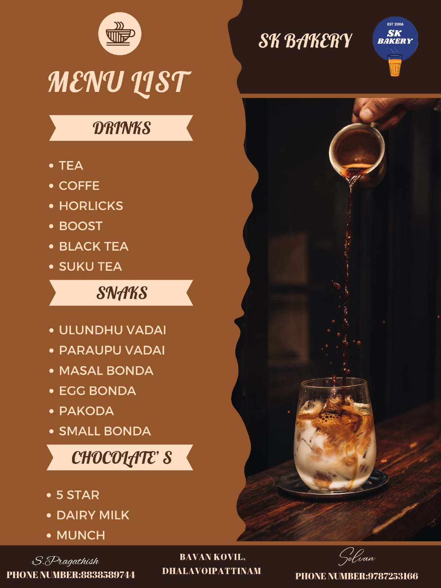

Welcome to Our Tea Shop

PARUPU VADAI

parupu Vada is a popular South Indian snack made with lentils and spices. It is a deep fried snack. The main ingredients are turmeric urad dal, chana dal and urad dal, which are soaked and then ground into a paste. The paste is then mixed with spices and herbs, shaped into small discs and deep fried until golden brown. Lentil vada is usually served with chutney or sambar.

TEA
A finely ground powder of specially grown and processed green tea leaves, traditionally consumed in East Asia.
ULUNDHU VADAI

Uludu vada prepared in quality oil cures stomach ulcers. Uludu vada is an excellent remedy for people suffering from hip pain and osteoporosis. People suffering from constipation, digestive problems, runny nose, cold and asthma should avoid eating vada.

sukku tea
A tea blend flavored with the oil of bergamot, giving it a distinct citrus flavor.
PADDAM MILK

Badam Milk is a traditional Indian drink made with almonds (or almond flour), cardamoms, saffron, whole milk and sugar.